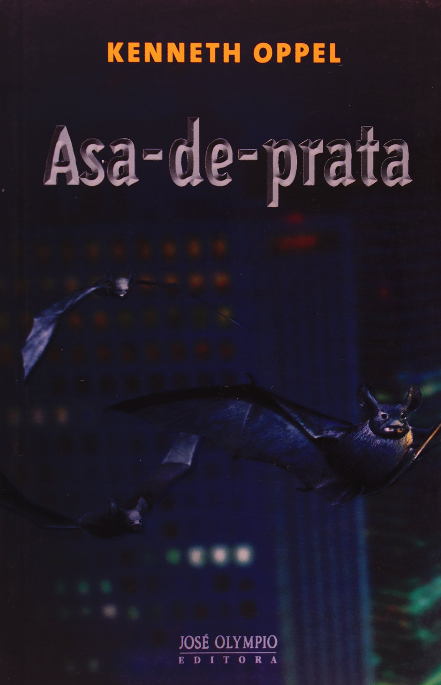

Asa-de-Prata
Com mais de 800 mil exemplares vendidos em todo o mundo. Asa-de-prata. do escritor canadense Kenneth Oppel. é uma fábula moderna e inovadora que conquistou leitores da Islândia ao Japão.
Também ganhou edições na França. Reino Unido. Espanha. Alemanha. Itália. Holanda. Dinamarca. Itália e China – além de nos Estados Unidos e Canadá. onde é um grande best seller. O livro traz a história de Sombra.
um jovem morcego. curioso e esperto. que acaba se perdendo de seu grupo a caminho do local de hibernação. Antes disso. porém. indispõe-se com sua “tribo”. os Asas-de-prata. ao desrespeitar uma proibição lendária: voar durante o dia para ver o sol.
A quebra da regra faz com que seu lar. Porto-da-árvore. um carvalho antiqüíssimo de casca espessa. seja atacado por corujas. as guardiãs dia. O evento divide o grupo: Sombra passa a ser admirado pelos morcegos jovens que antes o desprezavam.
Os mais velhos querem entregá-lo a inimigos. Enquanto sua mãe tenta protegê-lo. O Conselho das Anciãs também fica inquieto. Mas a mais velha. sábia e poderosa das líderes dos Asas-de-Prata.
Os mais velhos querem entregá-lo a inimigos. Enquanto sua mãe tenta protegê-lo. O Conselho das Anciãs também fica inquieto. Mas a mais velha. sábia e poderosa das líderes dos Asas-de-Prata.